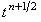

|
9.2. Характеристика подсхем.
Каждая из подсхем, составляющих предиктор (7.15), (7.16), является абсолютно устойчивой и решается с помощью метода прогонки. Коэффициенты, соответствующие уравнению (4.10), имеют вид: для первой подсхемы предиктора (7.15)
Легко видеть, что для обеих подсхем достаточное условие сходимости прогонки (4.16) выполняется.
Правая часть корректора (7.17) аппроксимируется относительно точки . Это означает, что разностный оператор в левой части является центральной конечной разностью, которая, как известно, имеет второй порядок аппроксимации. Следовательно, роль корректора (7.17) в схеме предиктор-корректор (7.15)-(7.17) заключается в повышении порядка аппроксимации схемы по времени:
Для решения корректора (7.17) используется рекуррентное соотношение, которое с учётом обозначений (7.6) имеет вид:
Итак, роль предиктора (7.15), (7.16) в схеме предиктор-корректор (7.15)-(7.17) заключается в обеспечении абсолютной устойчивости всей схемы; роль корректора (7.17) - в повышении порядка аппроксимации схемы по времени. |